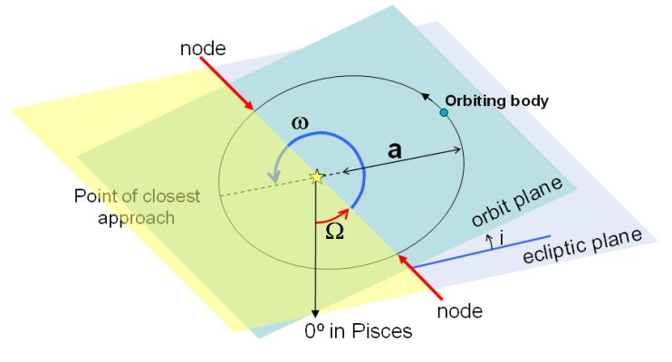

The motion of planets around the Sun can be described by Kepler’s three laws of planetary motion:
- First Law: All planets move along elliptical orbits with the Sun at one focus.
- Second Law: A line connecting a planet and the Sun sweeps out equal areas in equal time intervals.
- Third Law: The square of a planet’s orbital period about the Sun is proportional to the cube of its semi-major axis.
However, these laws are not sufficient to describe exactly where in an orbit a planet is, or how that orbit is oriented. Instead, we have to specify the values of the orbital elements. Note that several of these elements are redundant, as they can be used to derive other orbital elements.
| Type of orbital parameter | Name | Symbol |
|---|---|---|
| These orbital elements tell us information about the shape of an orbit: | Semi-major axis | a |
| Orbital eccentricity | e | |
| Perihelion distance | p | |
| These orbital elements tell us the orientation of an orbit: | Orbital inclination | i |
| Ascending node | Ω | |
| Argument of perihelion | ω | |
| These orbital elements tell us the position and speed of a planet in its orbit: | Orbital velocity | v |
| Mean anomaly | M | |
| Mean daily motion | d |
Finally, we need to specify the epoch (t0), or reference date of the coordinate system. This is usually given as the time when the planet is at its closest approach to the Sun.

This diagram shows some of the more important orbital elements for an object in an elliptical orbit. Symbols are defined in the table above.
All of the above has used the orbits of the planets around the Sun as an example. However, these orbital elements apply equally to the orbits of stars around each other and the orbits of satellites (both natural and articficial) around their planet.